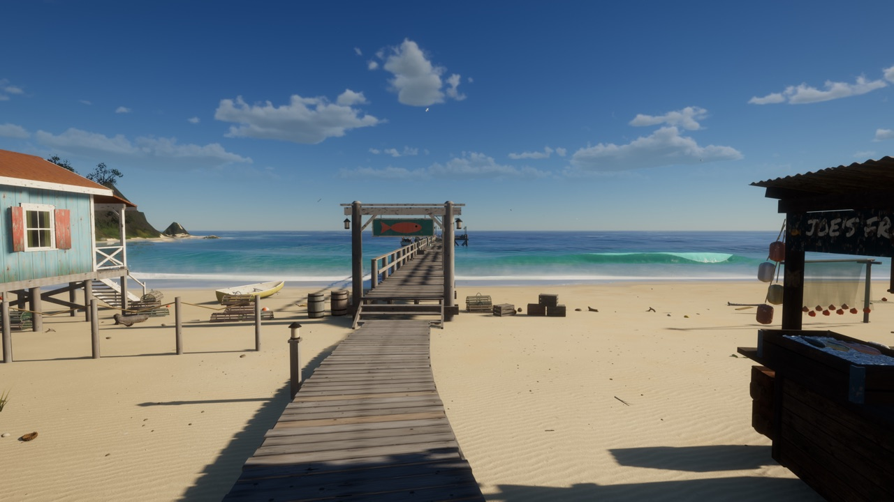

Orolda baliq ovi
Qayiqda rifga boring, baliq tuting va qorong‘i tushmasidan o‘ljani soting.
R bilan qarmoqni oling. Chap tugmani bosib turing va qo‘yib yuboring.
Po‘kak suvga botganda chap tugmani bosing.
Ip tarangligi yashil oraliqda tursin. Baliq qochganda tugmani qo‘yib yuboring.
Suv chuqurligi, joy va kun vaqti qaysi baliq ilinishiga ta’sir qiladi.
Iskala yonida Jou o‘ljangizni sotib oladi. Og‘ir baliq qimmatroq.
Marta kuchli ip, tezroq g‘altak va boshqa jihozlarni sotadi.
Qayiqqa chiqish yoki rulga o‘tirish uchun E bosing.
I bilan ovlangan baliqlar ro‘yxatini oching.